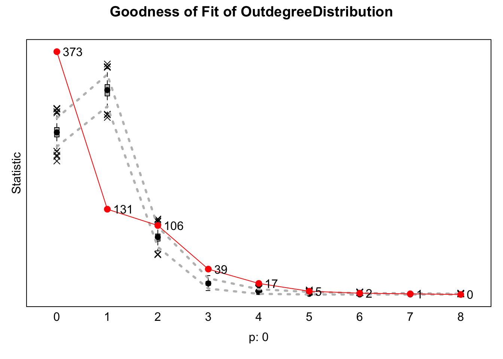
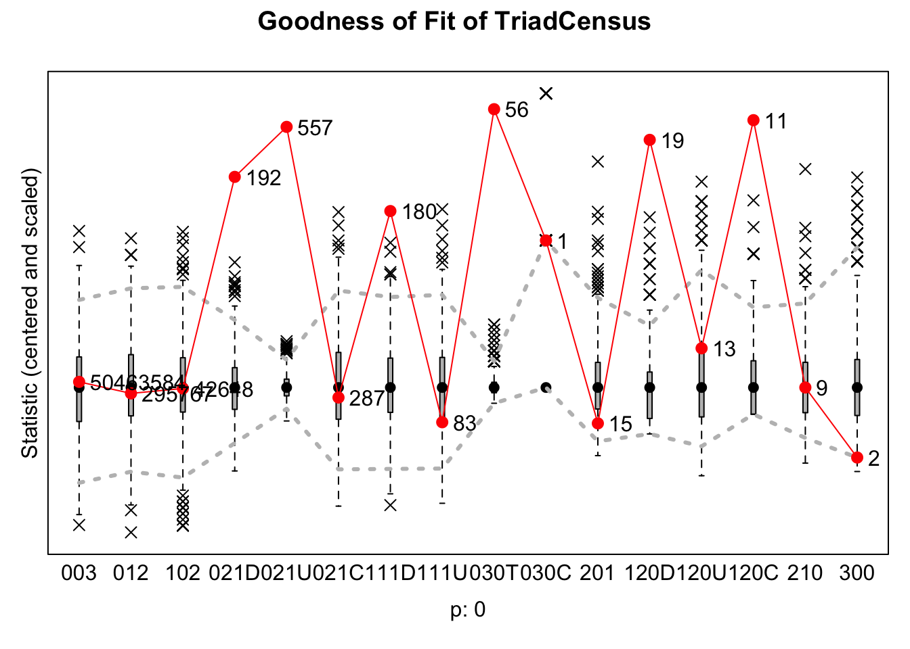
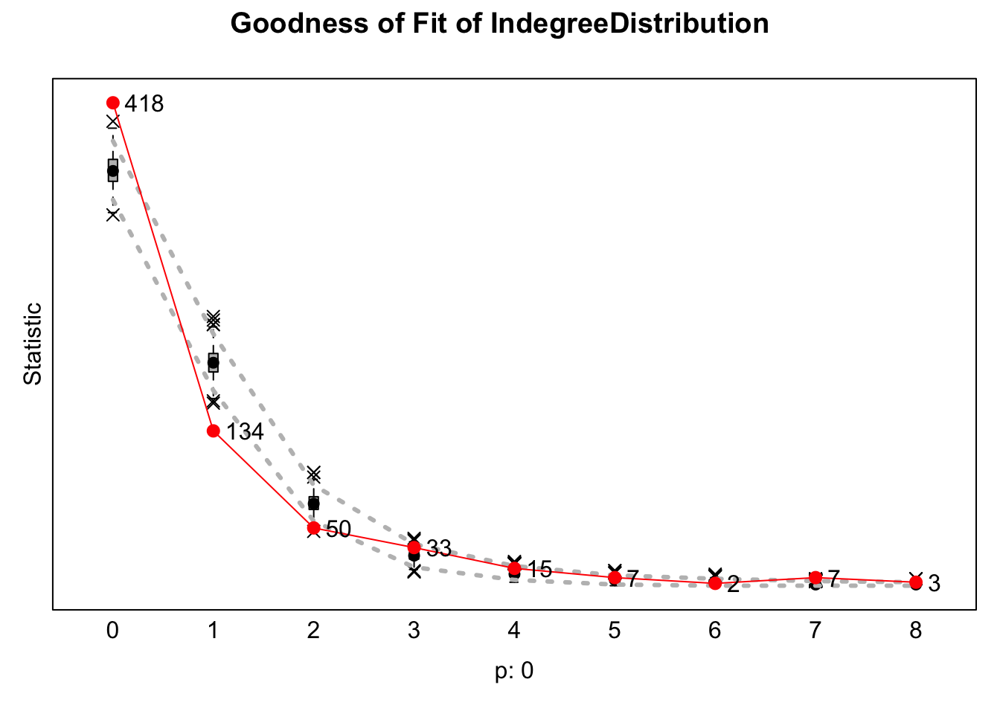
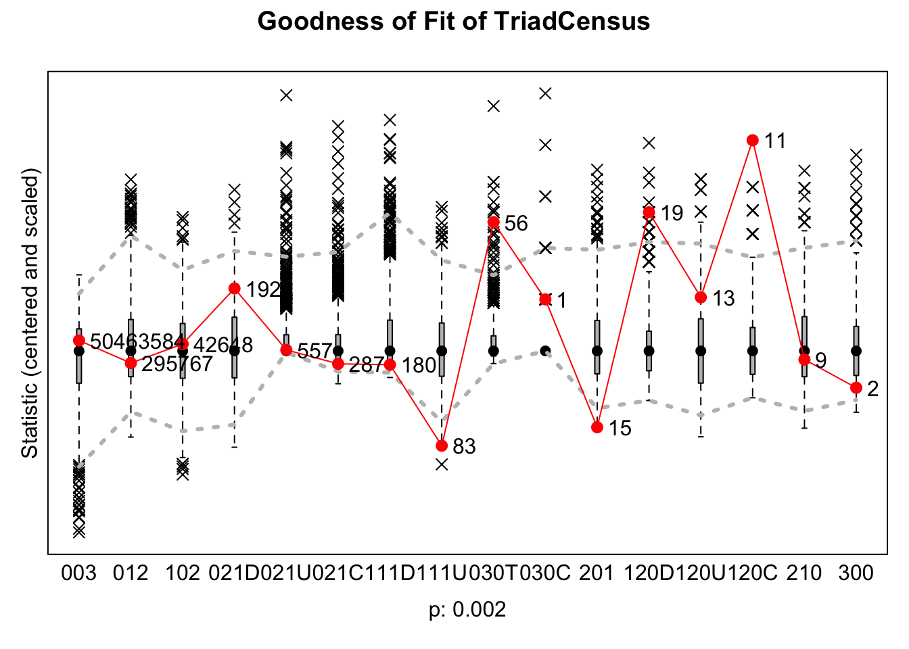
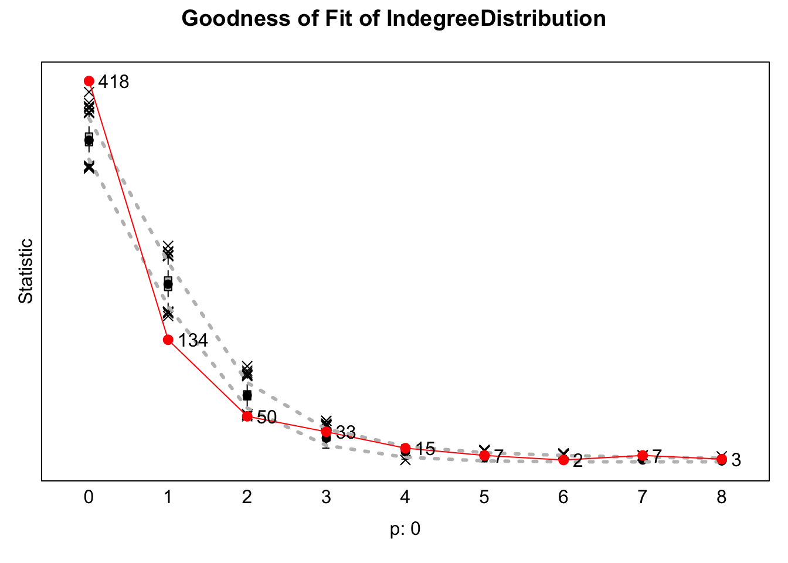
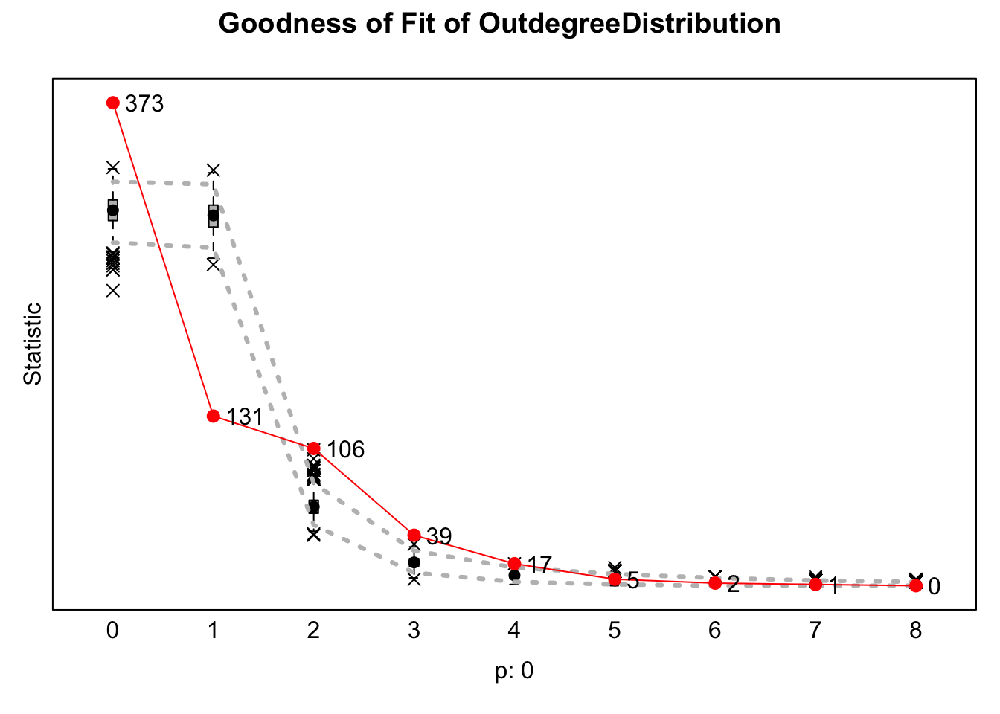
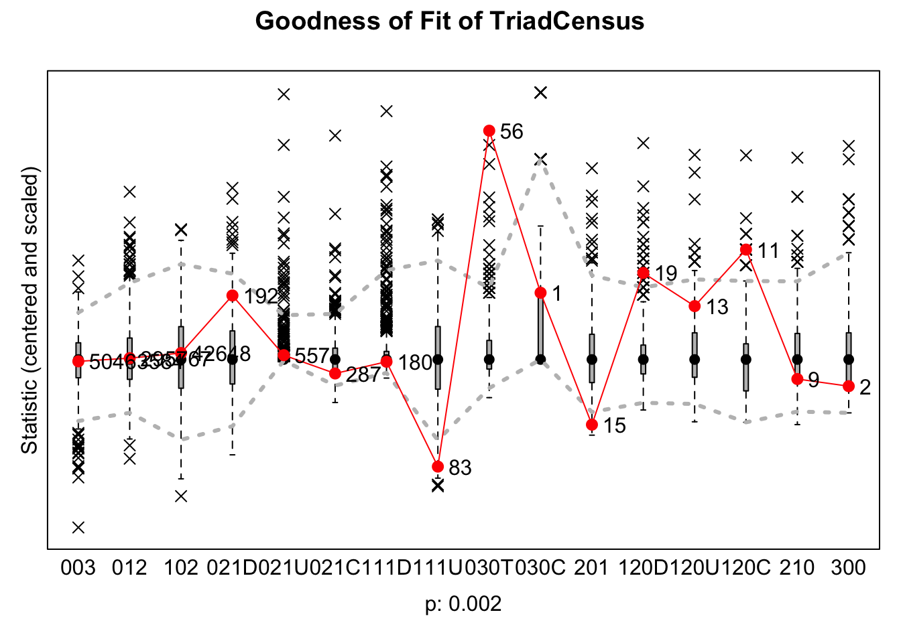

Journal 1
Mylène Husson
Last compiled on October, 2025
————————————————————————
1 Exploratory Analyses
Load in the data
load("./data/processed/result_gender2.rda")
# create waves
wave1 <- result_gender2$nets[1,,]
wave2 <- result_gender2$nets[2,,]For the exploratory analyses, I examine whether A → B → C triads are more likely to be closed or maintained by A, depending on the gender composition of the triad. Specifically, I investigate whether A is more likely to create or maintain a tie to C when C is of a different gender than A and B (H1), or when C is of the same gender as A and B (H2).
In RSiena, network dynamics are modeled as actors making decisions at each time step to either create new ties, maintain existing ties, break existing ties, or choose not to form ties. Thus, when referring to A creating or maintaining a tie to C, this is contrasted with A breaking or not creating a tie to C. In other words, the hypotheses test whether ties are more likely to be present (through creation or maintenance) rather than absent (through dissolution or non-creation) based on the gender composition of the triad.
As previously described in the Data and Methods section, the models
will be created as follows: 
1.1 Prepare for analysis
wave1 <- result_gender2$nets[1,,]
wave2 <- result_gender2$nets[2,,]
# a few people did work with themselves:
diag(wave1) <- 0
diag(wave2) <- 0
net_gender <- array(data = c(wave1, wave2), dim = c(dim(wave1), 2))
# net_gender
# dependent
net2 <- sienaDependent(net_gender)
# independent variables
# Gender
gender <- result_gender2$demographics$gender
gender <- ifelse(is.na(gender), NA,
ifelse(gender == "female", 1, 0))
gender <- coCovar(gender)
# University
# because I will only use this as a control using sameX
# and sameX merely checks whether two nodes have the same value of X
# and does not look at the order in which the universities are
# I can just make it a factor
result_gender2$demographics$Universiteit1.24[result_gender2$demographics$Universiteit1.24 == ""] <- NA
university_vector <-
as.numeric(as.factor(result_gender2$demographics$`Universiteit1.22`))
university <- coCovar(university_vector)
# Discipline
# Because discipline is literally time constant between 2022 and 2024
# (it said 65 people switched, but those were just missings in 2022 which were identified in 2024)
# and 2024 is complete
# I will use the data from 2024.
discipline <- as.numeric(as.factor(result_gender2$demographics$`discipline.24`))
discipline <- ifelse(is.na(discipline), NA,
ifelse(discipline == "2", 1, 0))
discipline <- coCovar(discipline)
# Create siena data object
mydata3 <- sienaDataCreate(net2, gender, university, discipline)
#mydata3
myeff <-getEffects(mydata3)
ifelse(!dir.exists("results"), dir.create("results"), FALSE)## [1] FALSEprint01Report(mydata3, modelname = "./results/result_gender")1.2 Model 1
1.2.1 Include effects
myeff <- setEffect(myeff, jumpXTransTrip, interaction1 = "gender", include = T)
myeff <- setEffect(myeff, homXTransTrip, interaction1 = "gender", include = T)1.2.2 Run model
myAlgorithm <- sienaAlgorithmCreate(projname = "result_gender")
ansM1 <- siena07(myAlgorithm, data = mydata3, effects = myeff, returnDeps = TRUE)
save(ansM1, file = "ansM1.RData")load("ansM1.RData")
ansM1## Estimates, standard errors and convergence t-ratios
##
## Estimate Standard Convergence
## Error t-ratio
##
## Rate parameters:
## 0 Rate parameter 4.2091 ( 0.4527 )
##
## Other parameters:
## 1. eval outdegree (density) -4.2400 ( 0.0815 ) 0.1078
## 2. eval reciprocity 3.3305 ( 0.1757 ) 0.0831
## 3. eval transitive triplets homog. gender 1.6051 ( 0.2446 ) 0.1411
## 4. eval transitive triplets jumping gender 3.4905 ( 0.3503 ) 0.0617
##
## Overall maximum convergence ratio: 0.1606
##
##
## Total of 1946 iteration steps.1.2.3 Interpretation
In this model the structural effects reciprocity and density were included, as is standard in RSiena. The RSiena model results indicate that the network is relatively sparse, as shown by the significant negative outdegree effect (b = -4.24, SE = 0.08), meaning that actors generally form few ties overall. However, ties that do form are highly reciprocal, as the reciprocity effect is significant and positive (b = 3.33, SE = 0.18).
I am particularly interested in the jumpXTransTrip and the homXTransTrip effects as those will help me answer my hypotheses. Both effects are positive and statistically significant.
The jumpXTransTrip effect was 3.49 (SE = 0.35). This indicates that in A -> B -> C triads, actor A is likely to form or maintain a tie with C (rather than dissolve or refrain from forming one) when C is of a different gender than both A and B. This result supports Hypothesis 1, as it aligns with the predictions of Contact Theory, and contradicts Hypothesis 2: when C is a different gender than A and B, A wants to collaborate with C despite a gender difference.
The homXTransTrip effect was 1.61 (SE = 0.24). This indicates that in A -> B -> C triads, actor A is likely to form or maintain a tie with C (rather than dissolve or refrain from forming one) when C is of the same gender as both A and B. This result supports Hypothesis 3 and aligns with Social Identity Theory, suggesting that A likes collaborating within gender-homogeneous triads.
Taken together, these first findings suggest that triadic closure in the network occurs both across and within gender groups. On the one hand, the positive jumpXTransTrip effect shows that A forms ties to out-group members in mediated triads, consistent with Contact Theory. On the other hand, the positive homXTransTrip effect indicates that A also favors same-gender triads, consistent with Social Identity Theory. Overall, this pattern suggests that A’s collaboration decisions in triadic structures may not be constrained by gender: A is likely to collaborate with C regardless of whether C shares A’s and B’s gender.
While the estimated effects in this model are statistically significant, this alone does not guarantee that the model accurately represents the structures observed in the network. Significance indicates that particular covariates are associated with tie formation, but it does not show whether the model reproduces the overall patterns of relationships among nodes. Goodness-of-Fit (GOF) tests are therefore essential: they compare the simulated networks generated by the model to the observed network across key structural features, such as outdegree distributions (reflecting individual activity), indegree distributions (capturing popularity), and triadic configurations (which relate to the tendency of groups to form clusters or reciprocal relationships). By evaluating these aspects, GOF tests reveal whether Model 1 is able to realistically replicate the network’s fundamental structural properties, helping us determine whether the model provides a meaningful representation of the social processes under study or merely captures isolated covariate effects.
1.2.4 GOF Indegree popularity
The goodness-of-fit graph for the indegree distribution indicates that the current model does not adequately capture the network’s indegree structure (p = 0). The model underestimates the number of actors with no incoming ties and overestimates the number of actors with one or two incoming ties. These are the most notable misestimations and suggest that including an indegree popularity effect could improve model fit.
gofi1 <- sienaGOF(ansM1, IndegreeDistribution, verbose = FALSE, join = TRUE, varName = "net2", cumulative = F)
save(gofi1, file = "gofi1.RData")load("gofi1.RData")
plot(gofi1, violin = F)
1.2.5 GOF Outdegree activity
Similarly, the goodness-of-fit graph for the outdegree distribution shows that the model fails to reproduce the observed outdegree structure (p = 0). The model underestimates the number of actors who send no ties and overestimates those who send only one tie. It again underestimates actors sending three or four ties. These patterns suggest that adding an outdegree activity effect could improve the model.
gofi2 <- sienaGOF(ansM1, OutdegreeDistribution, verbose = FALSE, join = TRUE, varName = "net2", cumulative = F)
save(gofi2, file = "gofi2.RData")load("gofi2.RData")
plot(gofi2, violin = F)1.2.6 GOF triad census
The graph below shows that the model does not adequately reproduce the local triadic structures of the observed network (p = 0).
The first three triad types (003, 012, 102) are well captured by the model. These configurations represent disconnected or minimally connected triads, and the good fit likely reflects the inclusion of outdegree (density) and reciprocity effects.
However, the model underestimates both 021D (two nodes receiving ties from the same node) and 021U (two nodes sending ties to the same node), suggesting that it does not fully capture patterns of high activity or popularity. Including explicit effects for outdegree activity and indegree popularity could improve the fit for these structures.
In contrast, the 021C configuration (A ->B, B->C) is well reproduced, indicating that the jumpXtransTrip and homXtransTrip terms successfully account for simple sequential closure within and across covariate-defined groups.
The model struggles with several more complex triads. The 111D triad, which combines a mutual tie with an additional asymmetric tie, is clearly misfit, suggesting that while reciprocity is captured at the dyadic level, the model fails to extend this pattern to triads where mutual and asymmetric ties coexist. Similarly, the 030T (transitive) and 030C (cyclic) triads are poorly reproduced, indicating that the current transitivity terms do not fully capture the observed extent of hierarchical and cyclic closure.
Mixed reciprocity–transitivity configurations such as 120D and 120C are also underestimated, confirming that the model does not adequately capture overlapping patterns of mutual and asymmetric ties. The fully mutual 300 triad is likewise poorly reproduced.
In conclusion, these results suggest that the current model captures basic triadic structures but fails to reproduce more complex patterns of activity, popularity, and closure. To address these gaps, I will first include ego-level statistics such as indegree popularity and outdegree activity. Next, I will incorporate dyadic covariate effects, for example, gender homophily using sameX terms. Finally, I will add enhanced triadic terms, including TransTrip and cyclic closure effects, to better reflect the full spectrum of observed triadic structures.
gofi3 <- sienaGOF(ansM1, TriadCensus, verbose = FALSE, join = TRUE, varName = "net2")
save(gofi3, file = "gofi3.RData")load("gofi3.RData")
plot(gofi3, violin = F, center = T, scale = T)
1.2.7 Conclusion
Although the model shows significant effects of jumpXtransTrip and homXtransTrip, it fails to adequately capture several key structures in the observed network, highlighting the need for refinement. To address these shortcomings, I will first incorporate ego-level statistics, such as indegree popularity and outdegree activity, to better account for node-level patterns. Next, I will include dyadic covariate effects, such as gender homophily via sameX terms, to reflect tendencies in pairwise interactions. Finally, I will extend the model with enhanced triadic terms, including TransTrip and cyclic closure effects, to more accurately represent the full range of observed triadic structures.
1.3 Model 2
1.3.1 Include effects
myeff <- setEffect(myeff, outAct, include = T)
myeff <- setEffect(myeff, inPop, include = T)1.3.2 Run model
myAlgorithm <- sienaAlgorithmCreate(projname = "result_gender")
ansM2 <- siena07(myAlgorithm, data = mydata3, effects = myeff, returnDeps = TRUE, prevAns = ansM1 )
save(ansM2, file = "ansM2.RData")load("ansM2.RData")
ansM2## Estimates, standard errors and convergence t-ratios
##
## Estimate Standard Convergence
## Error t-ratio
##
## Rate parameters:
## 0 Rate parameter 4.3068 ( 0.8799 )
##
## Other parameters:
## 1. eval outdegree (density) -5.0583 ( 0.1646 ) 0.4222
## 2. eval reciprocity 3.4252 ( 0.1865 ) -0.0799
## 3. eval indegree - popularity 0.1793 ( 0.0281 ) 0.4577
## 4. eval outdegree - activity 0.1215 ( 0.0221 ) 0.1506
## 5. eval transitive triplets homog. gender 0.9495 ( 0.2312 ) -0.0118
## 6. eval transitive triplets jumping gender 2.4098 ( 0.4063 ) -0.0448
##
## Overall maximum convergence ratio: 0.4945
##
##
## Total of 2669 iteration steps.1.3.3 Interpretation
In this model 2, the network remains sparse, as indicated by the significant negative outdegree (density) effect (b = -5.06, SE = 0.16), while reciprocity continues to be significant and positive (b = 3.32, SE = 0.19).
The inclusion of indegree popularity (b = 0.18, SE = 0.03) and outdegree activity (b = 0.12, SE = 0.02) shows that some actors are consistently popular or active.
The transitive triplet effects remain positive and significant: same-gender (b = 0.95, SE = 0.23) and jumping-gender (b = 2.41, SE = 0.41) triads continue to form, supporting hypotheses 1 and 3. The slightly smaller magnitudes compared to Model 1 suggest that part of the triadic closure is explained by popularity and activity rather than gender-specific mechanisms alone.
1.3.4 GOF indegree
This model, which includes indegree popularity and outdegree activity, appears to better capture the indegree distribution in the network compared to Model 1. However, the fit is still not good, as indicated by a p-value of 0. This model still underestimates the number of noedes with no incoming ties and overestimates nodes with one or two incoming ties.
gofi4 <- sienaGOF(ansM2, IndegreeDistribution, verbose = FALSE, join = TRUE, varName = "net2", cumulative = F)
save(gofi4, file = "gofi4.RData")load("gofi4.RData")
plot(gofi4, violin = F)
1.3.5 GOF outdegree
For the outdegree distribution, including indegree popularity and outdegree activity does not substantially improve fit compared to Model 1. The GOF test indicates a p-value of 0, showing that the model still poorly represents the distribution of outgoing ties in the observed network. Specifically, it underestimates the number of actors with no outgoing ties and overestimates actors with one or two outgoing ties.
gofi5 <- sienaGOF(ansM2, OutdegreeDistribution, verbose = FALSE, join = TRUE, varName = "net2", cumulative = F)
save(gofi5, file = "gofi5.RData")load("gofi5.RData")
plot(gofi5, violin = F)1.3.6 GOF triad census
The Goodness-of-Fit plot for the updated model indicates clear improvements over the previous model, particularly for triads related to activity and popularity. Overall, this model captures the triadic structure of the observed network a bit more accurately than Model 1 (p = 0.002).
The fit for the 021D and 021U triads, where two nodes either receive ties from the same actor or send ties to the same actor, shows marked improvement, reflecting the inclusion of the outdegree activity and indegree popularity effects. Simple sequential triads, such as 021C (A→B, B→C), also remain well reproduced, indicating that the jumpXTransTrip and homXTransTrip terms continue to capture mediated closure both across and within gender groups. The overall distribution of basic disconnected triads (003, 012, 102) is likewise still well represented. Importantly, 111D triads, which combine mutual and asymmetric ties, are now quite well captured, suggesting that the model successfully extends dyadic reciprocity to slightly more complex configurations.
Some misfit remains for higher-order structures. Transitive (030T) and cyclic (030C) triads are still somewhat underestimated, indicating that additional hierarchical or cyclic closure mechanisms may not yet be fully captured. Mixed configurations of reciprocity and transitivity (120D, 120C) and fully mutual triads (300) also remain imperfectly reproduced.
Overall, the updated model provides a substantially better fit to degree-related triads and captures key closure processes in the network. While it now accounts well for reciprocity and basic triadic patterns, additional higher-order or mixed-effect terms may be necessary to fully reproduce the more complex structures present in the observed network.
gofi6 <- sienaGOF(ansM2, TriadCensus, verbose = FALSE, join = TRUE, varName = "net2")
save(gofi6, file = "gofi6.RData")load("gofi6.RData")
plot(gofi6, violin = F, center = T, scale = T) ### Conclusion
These results suggest that the indegree and outdegree distributions are now better represented in the model. To further improve the fit, the next model will control for dyadic-level homophily, including gender, university affiliation, and discipline. These covariates may help explain residual variation in tie formation and reception beyond the structural effects of activity and popularity. To better capture the more complex triadic configurations that remain underestimated, such as cyclic and transitive patterns, I will subsequently include transitive triplet and cyclic closure effects in later model iterations.
1.4 Model 3
1.4.1 Include effects
myeff <- setEffect(myeff, sameX, interaction1 = "gender", include = T)
myeff <- setEffect(myeff, sameX, interaction1 = "university", include = T)
myeff <- setEffect(myeff, sameX, interaction1 = "discipline", include = T)1.4.2 Run model
myAlgorithm <- sienaAlgorithmCreate(projname = "result_gender")
ansM3 <- siena07(myAlgorithm, data = mydata3, effects = myeff, returnDeps = TRUE, prevAns = ansM2 )
save(ansM3, file = "ansM3.RData")load("ansM3.RData")
ansM3## Estimates, standard errors and convergence t-ratios
##
## Estimate Standard Convergence
## Error t-ratio
##
## Rate parameters:
## 0 Rate parameter 4.1796 ( 0.4565 )
##
## Other parameters:
## 1. eval outdegree (density) -8.7397 ( 0.3115 ) -0.0192
## 2. eval reciprocity 2.3461 ( 0.1510 ) -0.0644
## 3. eval indegree - popularity 0.1634 ( 0.0369 ) -0.0243
## 4. eval outdegree - activity 0.1410 ( 0.0238 ) -0.0680
## 5. eval same gender 0.2028 ( 0.0801 ) -0.0184
## 6. eval transitive triplets homog. gender 0.4553 ( 0.2204 ) -0.0190
## 7. eval transitive triplets jumping gender 1.6834 ( 0.3999 ) 0.0369
## 8. eval same university 2.2679 ( 0.1136 ) 0.0028
## 9. eval same discipline 2.6743 ( 0.2733 ) -0.0115
##
## Overall maximum convergence ratio: 0.1685
##
##
## Total of 2684 iteration steps.1.4.3 Interpretation
Just like in Model 1 and Model 2, the negative outdegree (density) parameter (b = -8.74, SE = 0.31) indicates that, overall, ties are unlikely to form without considering other structural or attribute-based effects. Reciprocity (b = 2.35, SE = 0.15) remains significant and positive, suggesting that mutual connections are substantially more likely than one-way ties, reflecting a common social tendency for individuals to reciprocate interactions.
Regarding individual-level activity, both indegree popularity (b = 0.16, SE = 0.04) and outdegree activity (b = 0.14, SE = 0.02) are positive. This indicates that popular individuals are likely to become even more popular, while individuals who send many ties are likely to continue forming ties.
Dyadic homophily effects based on gender, university, and discipline are also evident. Same-gender ties (b = 0.20, SE = 0.08) show a modest but significant preference for connections among individuals of the same gender. Institutional and disciplinary homophily are particularly strong: ties between individuals from the same university (b = 2.27, SE = 0.11) or the same discipline (b = 2.67, SE = 0.27) are highly probable, indicating that shared organizational or academic context is a dominant factor in network formation.
Focusing on the hypothesized effects, they have become slightly less positive compared to Model 2 but remain significant. The effect of jumpXtransTrip remains substantial (b = 1.68, SE = 0.40), indicating that in configurations A → B → C where A and B are of the same gender, A is still likely to form a tie to C when C is of a different gender. This finding supports Hypothesis 1 which is based on Contact theory but contradicts Hypothesis 2, which is based on Social Identity Theory (SIT).
The homXtransTrip effect also remains significant, reflecting that A is likely to close or maintain a triad by sending a tie to C when C is of the same gender. This effect is however quite lower than before, which may partly result the dyadic homophily effect, A’s preference for same-gender connections, rather than reinforcement from group belonging with B. Nevertheless, the effect is still significant alligning with Hypothesis 3 regarding SIT, suggesting that gender-homogeneous triadic closure is still relevant in the network.
1.4.4 GOF indegree
Model 3 still fails to accurately capture the indegree distribution in the observed network (p = 0). It consistently underestimates the number of nodes with no incoming ties and overestimates nodes with one or two incoming ties.
gofi7 <- sienaGOF(ansM3, IndegreeDistribution, verbose = FALSE, join = TRUE, varName = "net2", cumulative = F)
save(gofi7, file = "gofi7.RData")load("gofi7.RData")
plot(gofi7, violin = F)
1.4.5 GOF outdegree
Similarly, Model 3 does not adequately represent the outdegree distribution (p = 0). It underestimates nodes with no outgoing ties, overestimates nodes with a single outgoing tie, and again underestimates nodes with three outgoing ties.
gofi8 <- sienaGOF(ansM3, OutdegreeDistribution, verbose = FALSE, join = TRUE, varName = "net2", cumulative = F)
save(gofi8, file = "gofi8.RData")load("gofi8.RData")
plot(gofi8, violin = F)
1.4.6 GOF triad census
The Goodness-of-Fit plot for Model 3 shows a mixed pattern in capturing triadic structures compared to Model 2. Overall, the model fit remains low (p = 0.002). Several aspects of the triadic structure remain stable, while some show noticeable improvement and others have worsened.
Most notably, 030T triangles, representing cyclic triads, are better captured. This could be because the inclusion of dyadic homophily terms for gender, discipline, and university increases the likelihood of ties between nodes sharing these attributes. As a result, if A collaborates with B and B with C, C is more likely to send a tie back to A when all three share gender, discipline, or university affiliation. This improvement indicates that attribute-driven tie probabilities, in combination with the existing transitive and jump effects based on gender, help the model better reproduce cyclic triads that were previously underestimated.
In contrast, 120C and 120D configurations, which represent star-like triads with a central sender or receiver, are now less well captured. This could be because the strong homophily effects favor ties between similar nodes, reducing the formation of these centralized triads when nodes differ in attributes. Consequently, the underrepresentation of these ties indicates that the model now captures cycles more effectively at the expense of certain star-like structures.
gofi9 <- sienaGOF(ansM3, TriadCensus, verbose = FALSE, join = TRUE, varName = "net2")
save(gofi9, file = "gofi9.RData")load("gofi9.RData")
plot(gofi9, violin = F, center = T, scale = T)
1.4.7 Conclusion
In this model I added the dyadic gender homophily effect to bring more nuance to the evaluation of my hypotheses by controlling for individuals’ initial tendency to collaborate with others of the same gender. The inclusion of same-university and same-discipline effects further ensured that these factors did not confound the main effects of interest. However, the Goodness-of-Fit indices indicate that these additions did not substantially improve the model’s overall fit to the observed network.
1.5 Model 4
1.5.1 Include effects
myeff <- setEffect(myeff, transTrip, include = T)1.5.2 Run model
myAlgorithm <- sienaAlgorithmCreate(projname = "result_gender")
ansM4 <- siena07(myAlgorithm, data = mydata3, effects = myeff, returnDeps = TRUE, prevAns = ansM3 )
save(ansM4, file = "ansM4.RData")load("ansM4.RData")
ansM4## Estimates, standard errors and convergence t-ratios
##
## Estimate Standard Convergence
## Error t-ratio
##
## Rate parameters:
## 0 Rate parameter 4.1459 ( 0.4728 )
##
## Other parameters:
## 1. eval outdegree (density) -8.6978 ( 0.4365 ) 0.0503
## 2. eval reciprocity 2.2415 ( 0.1708 ) -0.0294
## 3. eval transitive triplets 1.1925 ( 0.2448 ) -0.0063
## 4. eval indegree - popularity 0.1581 ( 0.0257 ) 0.0522
## 5. eval outdegree - activity 0.1235 ( 0.0281 ) 0.0309
## 6. eval same gender 0.3016 ( 0.0890 ) 0.0659
## 7. eval transitive triplets homog. gender -0.6363 ( 0.3023 ) 0.0209
## 8. eval transitive triplets jumping gender -0.7931 ( 0.6783 ) -0.0380
## 9. eval same university 2.2349 ( 0.1492 ) 0.0077
## 10. eval same discipline 2.6401 ( 0.3027 ) 0.0413
##
## Overall maximum convergence ratio: 0.1166
##
##
## Total of 2891 iteration steps.1.5.3 Interpretation
1.5.4 GOF indegree
gofi10 <- sienaGOF(ansM4, IndegreeDistribution, verbose = FALSE, join = TRUE, varName = "net2", cumulative = F)
save(gofi10, file = "gofi10.RData")#load("gofi10.RData")
#plot(gofi10, violin = F)1.5.5 GOF outdegree
gofi11 <- sienaGOF(ansM4, OutdegreeDistribution, verbose = FALSE, join = TRUE, varName = "net2", cumulative = F)
save(gofi11, file = "gofi8.RData")#load("gofi11.RData")
#plot(gofi11, violin = F)1.5.6 GOF triad census
gofi12 <- sienaGOF(ansM4, TriadCensus, verbose = FALSE, join = TRUE, varName = "net2")
save(gofi12, file = "gofi12.RData")#load("gofi12.RData")
#plot(gofi12, violin = F, center = T, scale = T)